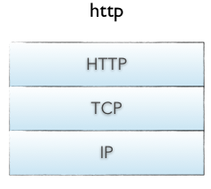

¿Que es el protocolo HTTP?

El Protocolo de Transferencia de Hipertexto (Hypertext Transfer Protocol) es un sencillo protocolo cliente-servidor que articula los intercambios de información entre los clientes Web y los servidores HTTP. La especificación completa del protocolo HTTP 1/0 está recogida en el RFC 1945. Fue propuesto por Tim Berners-Lee, atendiendo a las necesidades de un sistema global de distribución de información como el World Wide Web.
Desde el punto de vista de las comunicaciones, está soportado sobre los servicios de conexión TCP/IP, y funciona de la misma forma que el resto de los servicios comunes de los entornos UNIX: un proceso servidor escucha en un puerto de comunicaciones TCP (por defecto, el 80), y espera las solicitudes de conexión de los clientes Web. Una vez que se establece la conexión, el protocolo TCP se encarga de mantener la comunicación y garantizar un intercambio de datos libre de errores. HTTP se basa en sencillas operaciones de solicitud/respuesta.